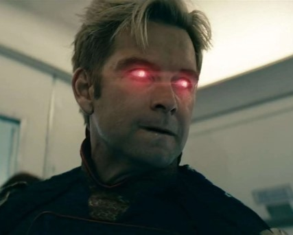
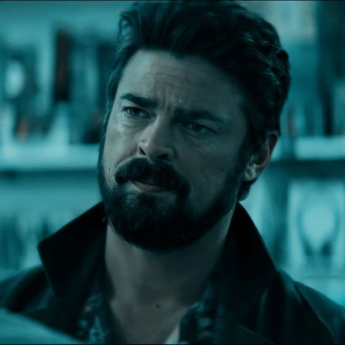
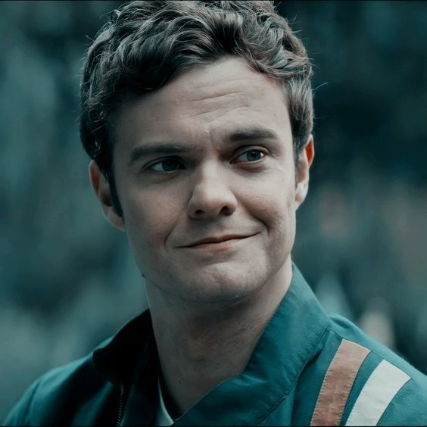
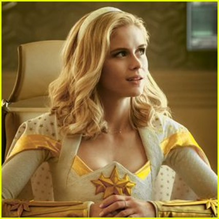

THE BOYS
| Pictures | Character Name | Description |
|  | Homelander (Played by Antony Starr) | He is the head of the well-known superhero squad known as The Seven, the most powerful superhero created by Vought International, the covert son of Soldier Boy, and the father of Ryan Butcher. Homelander and the Seven portray themselves as a perfect and pure superhero team, but in reality, they actually bring about far more harm and fatalities than they manage to avert. Moreover, Vought uses its extensive media contacts and resources to hide their crimes. |
|  | Billy Butcher (Played by Karl Urban) | He is the leader of the vigilante group of the same name, which is dedicated to eliminating Vought and the Seven by any means necessary. A former member of the British special forces turned vigilante; Billy Butcher is as charming as he is shrewd. He is a force of nature who can convince practically anyone of anything with a smile, physical force, or occasionally both. His only goal in life is to eliminate superheroes. Yet his animosity for one particular Supe, Homelander, is what fuels this personal grudge. Butcher won't let anyone or anything stand in his way as he seeks to exact revenge on Homelander at all costs. |
|  | Hughie Campbell (Played by Jack Quaid) | He belongs to the group, The Boys. Hughie leads an average existence. He still resides at home with his father, Hugh Campbell Sr., in the same bedroom where he grew up. He is a mild-mannered man with a dull job. His lover Robin is the only source of happiness in his life. That is, until A-Train, a speedy superhero, rams into Robin, eviscerating and killing her instantly. Eager for retribution, Hughie is recruited by anti-Supe vigilante Billy Butcher and his world is flipped upside down as he finds himself caught in the thick of a war against superheroes – who, as it turns out, are neither super nor heroic. |
|  | Starlight (Played by Erin Moriarty) | She is Hughie Campbell's love interest and one of the Seven, a team of superheroes supported by Vought-American (Vought International in the television show). She goes by the name Starlight. Former Young Americans member Annie possesses the powers of flying and light manipulation. She is shown as having unselfish, altruistic motives throughout the entire story, but she loses hope when she learns Vought and the other Seven members have terrible secrets. |
 |
A-Train (Played by Jessie T. Usher) | The main foe in the Dynamite television series The Boys is A-Train. He is a speedster who was formerly a member of the Teenage Kix squad before joining the Seven to take the position of their previous speedster. He is Hughie Campbell's mortal adversary. When pursuing a criminal, he unintentionally killed Hughie Campbell's girlfriend. The single incident served as the catalyst for the series' plot points by inspiring Hughie to seek revenge on superheroes and involving him with the Boys. |
Sources: Click the pictures for it!!!